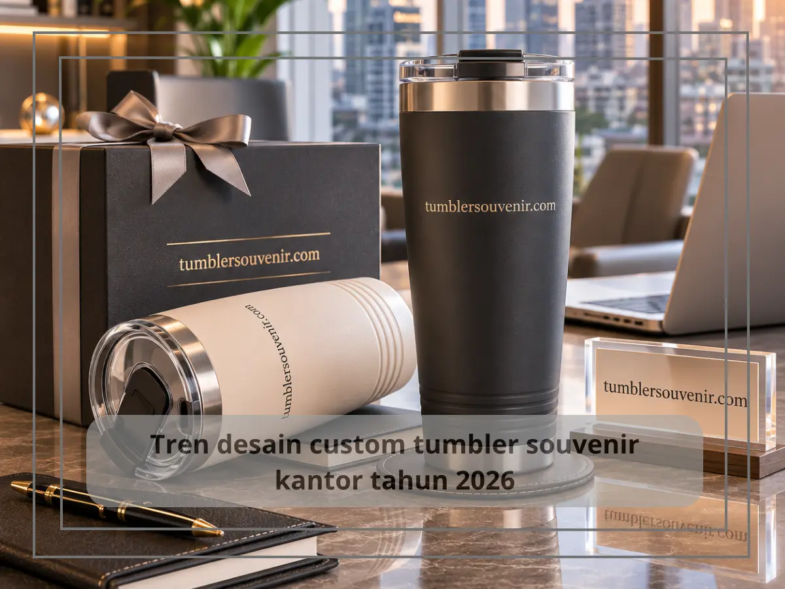
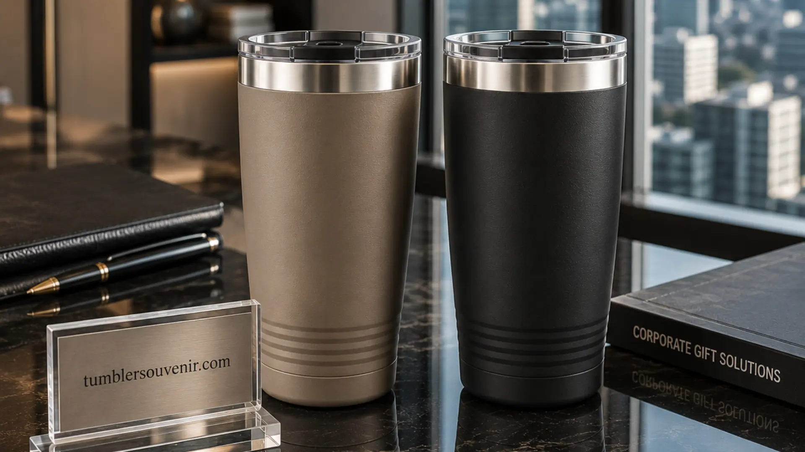

Tren Desain Custom Tumbler Souvenir Kantor Terbaru 2026
Ringkasan
Tren desain custom tumbler souvenir kantor tahun 2026 mengarah pada desain minimalis dengan warna earth tone, teknik cetak laser engraving untuk kesan elegan, serta kombinasi material stainless steel dengan aksen matte finish. Tren ini mencerminkan pergeseran selera korporat menuju tampilan yang lebih clean, timeless, dan tidak lekang oleh waktu.
- Desain minimalis dengan warna earth tone menjadi tren dominan tahun 2026.
- Teknik laser engraving semakin populer karena memberikan kesan elegan dan premium.
- Finishing matte menjadi favorit dibanding glossy karena terkesan lebih modern.
- Personalisasi nama penerima mulai banyak diminati sebagai nilai tambah souvenir korporat.
Daftar Isi
- Mengapa Desain Minimalis Semakin Diminati untuk Tumbler Souvenir?
- Teknik Cetak Apa yang Sedang Populer untuk Custom Tumbler Souvenir?
- Bagaimana Tren Personalisasi Memengaruhi Nilai Souvenir Korporat?
- Warna dan Finishing Apa yang Paling Sesuai dengan Identitas Brand?
- Material Apa yang Semakin Diminati untuk Tumbler Souvenir Premium?
Mengapa Desain Minimalis Semakin Diminati untuk Tumbler Souvenir?
Desain minimalis semakin diminati untuk tumbler souvenir karena mampu memberikan kesan profesional yang tidak mudah terlihat usang meski digunakan bertahun-tahun. Tampilan yang bersih dan sederhana membuat logo perusahaan menjadi fokus utama tanpa distraksi elemen visual lain.
Tren ini juga sejalan dengan pergeseran preferensi desain korporat secara global yang mengarah pada estetika clean dan fungsional, sebagai reaksi terhadap desain yang sebelumnya cenderung ramai dengan banyak elemen dekoratif.
Warna earth tone seperti hijau tua, cokelat, dan abu-abu gelap menjadi pilihan populer karena memberikan kesan hangat sekaligus profesional, cocok dipadukan dengan berbagai identitas brand tanpa terkesan mencolok berlebihan.
Teknik Cetak Apa yang Sedang Populer untuk Custom Tumbler Souvenir?
Teknik cetak yang sedang populer untuk custom tumbler souvenir adalah laser engraving dan UV printing. Laser engraving diminati karena menghasilkan tampilan logo yang menyatu dengan permukaan material, memberikan kesan premium dan tahan lama tanpa risiko pudar. Sementara UV printing dipilih ketika logo memiliki banyak warna yang perlu ditampilkan secara akurat.

Laser engraving bekerja dengan cara mengikis lapisan permukaan material menggunakan sinar laser presisi tinggi, sehingga menghasilkan tekstur timbul atau cekung yang terasa saat disentuh. Teknik ini sangat cocok untuk logo monokrom atau desain garis yang detail.
Di sisi lain, UV printing memungkinkan hasil cetak full color dengan detail tinggi, cocok untuk logo dengan gradasi warna atau elemen grafis yang kompleks. Kedua teknik ini memiliki keunggulan berbeda tergantung kebutuhan visual logo perusahaan.
Bagaimana Tren Personalisasi Memengaruhi Nilai Souvenir Korporat?
Tren personalisasi memengaruhi nilai souvenir korporat dengan menambahkan elemen nama penerima atau inisial pada tumbler, sehingga gift terasa lebih personal dan tidak sekadar merchandise massal. Personalisasi ini meningkatkan rasa dihargai pada penerima, terutama untuk gift yang ditujukan kepada karyawan atau klien tertentu.
Selain nama, beberapa perusahaan juga mulai menambahkan pesan singkat atau tanggal acara sebagai bagian dari personalisasi, sehingga tumbler souvenir tidak hanya berfungsi sebagai gift, tetapi juga sebagai kenang-kenangan dari momen tertentu seperti anniversary perusahaan atau penghargaan kerja.
Tren ini menunjukkan bahwa nilai emosional dari sebuah souvenir kini menjadi pertimbangan yang setara pentingnya dengan aspek fungsional dan branding.
Warna dan Finishing Apa yang Paling Sesuai dengan Identitas Brand?
Warna dan finishing yang paling sesuai dengan identitas brand sebaiknya mengacu pada warna utama corporate identity perusahaan, dengan finishing matte yang memberikan kesan modern dan tidak mudah menunjukkan bekas sidik jari dibanding finishing glossy.
Untuk brand dengan identitas warna netral seperti hitam, putih, atau abu-abu, finishing matte semakin memperkuat kesan premium. Sementara untuk brand dengan warna cerah atau identitas yang lebih ekspresif, kombinasi warna solid dengan aksen logo kontras dapat menjadi pilihan yang tetap terlihat profesional.
Konsistensi warna antara tumbler souvenir dengan merchandise korporat lain, seperti kop surat atau seragam, turut memperkuat kesan brand yang terintegrasi di mata penerima maupun publik.
Material Apa yang Semakin Diminati untuk Tumbler Souvenir Premium?
Material yang semakin diminati untuk tumbler souvenir premium adalah stainless steel food grade dengan lapisan tambahan anti gores, serta kombinasi tutup berbahan bambu atau kayu untuk memberikan sentuhan natural yang tetap terlihat elegan. Kombinasi material ini mencerminkan tren korporat yang mulai memperhatikan estetika sekaligus kesan ramah lingkungan.
Lapisan anti gores pada permukaan stainless steel membantu menjaga tampilan tumbler tetap mulus meski digunakan dalam jangka panjang, sehingga logo yang telah dicetak tidak mudah rusak akibat gesekan sehari-hari. Hal ini penting untuk menjaga kesan premium souvenir tetap terjaga meski telah dipakai bertahun-tahun.
Sementara itu, elemen tutup berbahan bambu atau kayu memberikan kontras visual yang menarik terhadap material stainless steel, menciptakan kesan modern namun tetap hangat, sehingga cocok dipadukan dengan berbagai tema corporate identity yang mengusung nilai keberlanjutan.
Tren desain tumbler souvenir kantor tahun 2026 mengarah pada tampilan minimalis, teknik cetak presisi, dan personalisasi yang lebih mendalam. Perusahaan yang ingin mengikuti tren ini sekaligus memastikan hasil custom sesuai identitas brand dapat langsung berkonsultasi dan memesan melalui tumblersouvenir.com.


.webp)